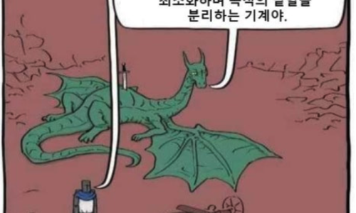
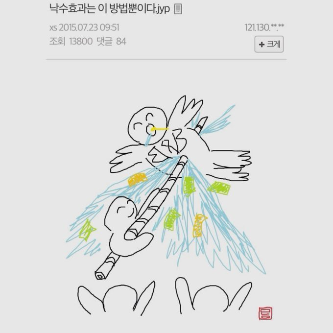

최근 비트코이너들 사이에서 언급이 많이 되는 책을 사서 보았습니다.
제목 때문인지, 비트코이너 뿐만 아니라 일반인 사이에서도 좀 유행을 타는 듯 한 책입니다.
책 내용은
비트코이너들이라면 익히 아는 그런 평범한 내용
입니다.
그래서 제 개인적인 입장에선 새로 배울게 하나도 없어서 별 재미는 없었습니다만, 아마 경제학 주류라고 할 수 있는 케인
즈학파 또는 한 때 한국에서도 크게 유행했던 맑스주의 쪽 공부만 하셨거나, 아예 경제 쪽에 관심이 없었던 평범한 분들이
라면 상당히 신선할 수 있는 책입니다.
이 책의 원래 제목은
"Warum andere auf Ihre Kosten immer reicher werden"으로 구태여 직역하자면 "왜 다른 사람
들은 당신을 희생시켜서(당신의 비용으로) 점점더 부자가 되는가"입니다. 원저 제목이 한국어판 제목 보다는 좀 더 적나라
하게 책의 원래 내용을 더 잘 담고 있다고 생각합니다.
책은 대부분의 사람들이 피상적으로만 이해하고 있는 우리 사회의 잘못된 화폐 시스템에 대해서 처음부터 차근차근 설명
하면서,
이러한 잘못된 화폐시스템 때문에 우리 사회가 병들어 가고 있다고 주장합니다.
이 책에서 말하는 사회가 병든다
는 것은 다음의 현상을 의미합니다.
1. 인플레이션으로 인해 허덕이는 가정 경제와 사회의 출생률 저하
2. 포풀리즘의 등장과 정부에 의존하는 "해줘" 피플의 증가
3. 인위적 경기 과열과 불경기가 반복되는 붐 Boom 버스트 Bust 사이클의 발생
어째 어디서 많이 본 현상 같이 않으신지?
많은 사람들이 위와 같은 현상은 '이게 다 자본주의 때문이야' 라고 이야기 하지만 (특히 21세기 자본을 쓴 피케티가 그러
합니다), 저자는 절대 자본주의 때문이 아니며 이것은 화폐 시스템의 문제라고 주장합니다.
그렇다면 저자가 말하는 망가진 화폐 시스템이란 무엇일까요?
그것은 바로 발행량이 정부 입맛대로 무한히 쉽게 증대될 수 있는 명목 화폐 시스템 Fiat Money System 입니다.
원래 돈이라는 것은 보통 자연에 존재하는 귀한 것들을 이용했습니다. 우리가 아는 금이 대표적입니다.
금의 특징은 생산
량이 쉽게 늘지 못한다는 것이었습니다.
그럴 만도 한게 금이 한 번 만들어질려면 일단 엄청나게 큰 규모의 별이 핵융합 해
서 수소를 헬륨, 산소, 탄소 등 으로 만든 다음에 수명의 마지막 순간에 엄청난 규모의 초신성 폭발을 하면서 이들 원자중
아주 일부를 순간적으로 금가루로 바꾸며 우주에 금가루를 흩뿌려 버립니다. 이 때 우주로 퍼져나간 금가루들이 (물론 그
가루 하나가 서울보다 클 수도 있지만) 하필이면 지구 형성될 때 지구에 들어온 다음에 지구에서도 전체 질량의 1% 도 안
되는 계란의 껍질 같은 지구의 '지각' 부분에 운좋게 포함되어 있어야 하는데 그걸 또 인간이 찾을 수 있어야 하기 때문입
니다.
와 진정한 POW
http://www.ganghwanews.co.kr/news/articleView.html?idxno=9451
금의 기원.. 우주에서 금은 어떻게 만들어졌나? - 인터넷 강화뉴스
당신 손가락에 끼워져 있는 금반지의 금은 최소한 46억 년은 된 것이다. 왜냐면, 금은 결코 지구에서는 생성될 수 없는 금
속이기 때문이다. 우주의 어디에선가 생성된 금이 46억 년 전 태양계 초창기 지구가 만들...
www.ganghwanews.co.kr
물론 지구는 초신성 폭발을 일으킨 별에 비하면 비교할 수도 없을 만큼 아주 작은 물체이기 때문에 지구에서도 수천년간
꽤 많은 금을 찾을 수 있습니다만, 필요하다고 해서 마음대로 생산할 수 있는 물질은 아닙니다 (사실 합성이 가능하긴 한데
너무나 많은 비용이 들기 때문에 아직까지는 인공 합성에 경제성이 없는 물질로 간주됩니다).
저자는 이런 인간이 함부로 생산할 수 없는 귀한 것을 돈으로 사용하던 시절에서 "돈이 있으라! "라고 하면 정말 돈이 생기
는 명목 화폐 시스템으로 전환한 것이 만악의 근원이라 주장합니다. 참고로 명목 화폐의 영어식 표현인 Fiat Money 에서
Fiat은 라틴어로 "있으라!" 라는 뜻입니다.
성경에서 빛이 있으라! 는 라틴어 표현이 "Fiat lux" 인데, 현대 명목 화폐가 생기는 과정을 생각해보면 정말 성경에 나오
는 천지창조급 기적과 같기 때문에 정말인지 Fiat Money는 너무나도 적절한 이름입니다.
이렇게 부채와 신용창조로 기적처럼 아무런 근거도 없이 생긴 Fiat Money 들은 설탕을 마구 퍼먹은 사람의 혈당마냥 미
친듯이 오르며 잠시 슈가하이 를 일으키다가 갑자기 혈당이 박살나는 슈가 크러시를 일으키고, 나중엔 자주 설탕을 퍼먹은
사람이 당뇨에 걸리듯이 우리 경제 시스템을 교란합니다.
원래는 돈이라는게 상당히 귀하기 때문에
사회에 있는 누군가가 미래의 소비를 줄여서 저축
을 하고, 그렇게 사회적 저축을
통해 형성된 자본이 기업가들에게 (수요공급을 통한) 적절한 이자에 공급되어
사회적 생산성 향상과 이로인한 이자율 이
상의 수입을 이루어내는 프로젝트에 신중하게 투입
되어
사회의 부가 창출
되어야 하는데...

무엇이 부를 창출하는가?
아래 드래곤과 용사의 만화를 잠깐 감상하자. 드래곤은 용사에게 칼빵을 맞아 쓰러지는데 쓰러지고 나서 황...
위에서 말한 전지창조급으로 형성된 명목 화폐는 쉽게 생긴 만큼 낮은 이자율로 기업가들에게 (특히 정치인과 친한 기업가
들에게 먼저) 값싸게 공급되고, 이로인해 사회의 생산성 향상과는 별 관련 없는 프로젝트에도 막대한 돈이 투입되면서 사
회의 생산성을 높히는데 쓰였어야 할 소중한 자원들이 줄줄줄 낭비됩니다.
그래도 여기까지만이면 다행인데, 문제는 이렇게 창조된 돈들이 절대로 다시 "없어져라!" 하면서 원래대로 사라지는 경우
는 거의 없다는 것입니다. 정부의 부채는 일반적으로 다른 부채를 만들어 얻은 돈으로 갚아지는데 쉽게 생각하면 개인이
하는 카드 돌려막기를 정부도 함께 열심히 하고 있다고 보면 됩니다.
정부가 카드 돌려막기 할 때마다, 강제로 이자율 낮춰서 신용창조 할 때마다 시중에는 창조된 돈이 점점 늘어나고.. 늘어나
고.. 늘어나고.. 허허... 이렇게 자꾸 늘어난 돈은 그 가치가 떨어집니다.
돈의 가치가 빠르게 떨어지면 자산 가격은 폭등합니다. 동시에 사장님이 주시는 임금에 의존하는 계층인 임금 노동자들의
임금 상승률이 물가 상승률을 못 따라가기 시작합니다. 코로나 때 다 봐서 지금 뭔 소리 하는건지 아시죠?
이 상황속에서 마치 헬스장 가면 가끔 너무 빠른 런닝 머신에서 아저씨들이 자빠지듯이
임금 노동자들의 삶은 점차 팍팍해
지다가 체력이 부족한 분 들 부터 하나하나 자빠지며 빈민층으로 전락합니다. 이런 난리중 임금 노동자 계층이 결혼은 무
슨 결혼 씨부랄, 일부는 본인 입도 못 챙겨서 '살자'를 시도하고, 대부분은 독신으로 본인 입만 간신히 챙기면서 영원히 고
통받는 삶을 선택합니다. 혹시 설사 운좋게 결혼한 고소득 노동자는 현재의 삶의 퀄리티를 영위하기 위해 애를 낳지 않는,
모든 생물의 본능인 '자손을 남기라는 유전자의 명령'도 무시되는 극도의 스트레스 상황에 몰리게 됩니다.
주변 친구들이 이렇게 작살나는걸 보면서 영리한 우리 휴먼은 미래를 준비하기 위한 검소한 생활과 저축보다는 '빨리 안하
면 내가 바보지!!! ' 하면서 몰빵, 한탕, 가즈아!! 투자를 외치며 투자라는 잔인한 전쟁터에 멋도 모르고 총알받이마냥 투
신하거나 ' 어차피 이번 생 똥망' '어차피 모아봐야 가치도 없는 돈 기깔나게 멋찌게 쓰고 걱정은 나중에 하즈아~~ ' 하는
탕진족 노선을 타게 됩니다.
그리고 어둠속에서 이러한 사회의 망조를 보면서 웃음 짓는 사람들.
바로 권력을 추구하는 정치인들은 이렇게 도탄에 빠진 민중에게 이것도 해주겠다, 저것도 해주겠다 하면서 악마의 웃음을
흘리고 다닙니다.
정부에서 돈을 받을 땐 좋지만 도대체 그 돈은 누구 주머니에서 나온 것일까요. 그리고 그 돈을 한 번 맛본 어려움에 처했
던 사람들은 어떻게 될까요.
지옥으로 가는 길은 늘 선의로 포장되는 법입니다.
정부의 잘못된 화폐 시스템으로 인해 사람들이 도탄에 빠지면, 영리한 포플리즘 정치인들이 이용해 사람들을 구제하는 척
하면서 이리저리 포풀리즘을 펼치며 메시아로 자리잡고 빈민들의 지지를 받기 시작합니다. 그리고 그들은 명목 화폐 시스
템의 장점(?) 이용해 기존에 기업가들에게만 풀던 창조된 돈을 현재의 지지자 및 미래의 지지자들을 위해 더 풀어재끼기
시작합니다.
야 임마 우리도 좀 같이 쓰자 임마
당연히 이로인한 생산성 향상은 없습니다.
사회의 부가 증가하지 않는데 돈만 더 증가하면 결국
사회는 더 뜨거운 불지옥으로 갈 뿐입니다. 자산 가격은 점점 말도 안
되는 수치로 폭등하고 한 때 두텁던 중산층은 매일 무거운 세금에 갈리고 엇 하는 사이에 자산 폭등열차에 치이면서 빈곤
층으로 전락합니다.
물론 정부에서 공짜 돈 받는 그 순간만큼은 정말 즐거운 일입니다만, 정부에서 공짜 돈을 받는 사람들도 점차 그 돈이 없으
면 감내하기 힘들 만큼의 고통을 느끼기 시작합니다.
결국 정부의 경제적 보조에 의존하며 자신을 위해 보조금을 지급하는
정부를 아무 생각없이 찬양하고 지지하는 정치적 좀비, 경제적 팬터닐 중독자들이 사회에 범람하기 시작합니다.
미국 '좀비 마약'과의 전쟁… 펜타닐 해독도 막는 '이것' 복병 | 한국일보
미국 사회가 강력한 마약성 진통제인 펜타닐의 확산으로 골머리를 썩는 가운데, 동물용 진정제가 ‘펜타닐과의 전쟁’에서
복병으로 떠올랐다. 미 일
www.hankookilbo.com
이들 정치적 좀비들은 가짜 메시아가 말하는 것 처럼 중산층을 갈아서 빈민층을 넓히는 무거운 세금 제도에 쉽게 동의합니
다. 민주주의의 참으로 아름다운 점 중 하나입니다. 너도 나도 한 표란 뜻이죠. ㅎㅎ
어차피 인간 죽창 한 방이면 끝입니다.
이 때 조금이라도 여력이 있는 부자나, 똑똑한 사람들은 나라를 떠나기 시작합니다. 어차피 여기있다가 정부한테 빌빌거리
다가 죽창 맞느니 기회있을 때 빨리 뜨는게 낫겠다는 생각일겁니다.

이처럼 잘못된 화폐 시스템 때문에 사회 구성원 모두가 도탄에 빠지고, 오직 소수의 정치인과 그들의 첩들만 웃고 사는 현
실에 강림한 지옥이 들어섭니다.
\
아 ~ 그런데 정말 화폐 시스템 때문에 이 사단이 벌어진다고? ㅎㅎㅎ 에이~~~ 라고 생각하시고 웃으시려면 그냥 웃으시
면 되구요~ (웃으면 복이 온다고 합니다!)
혹시 방금 위에 적어둔 지옥으로 가는 스토리에 대해서 좀 더 알고 싶다면 오늘 소개한 책을 진실을 이해하는 시작점으로
읽어보셨으면 좋겠습니다.
끝.
종속성을 창출하는 자는 권력을 획득할 수 있다.
종속된 사람들에 대한 권력 말이다.
이것이 현재 화폐 시스템이 돌아가는 방식이다.
page 180